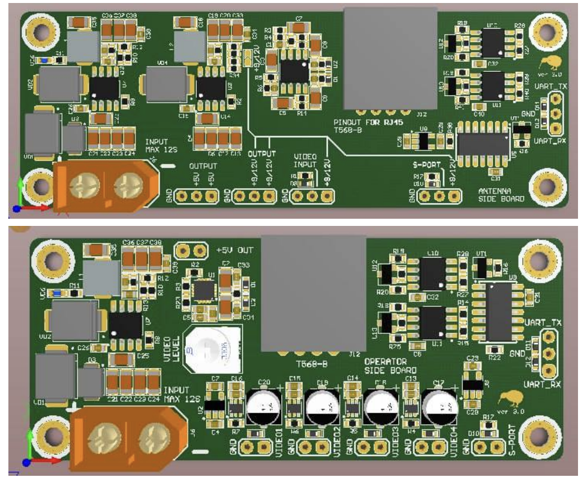
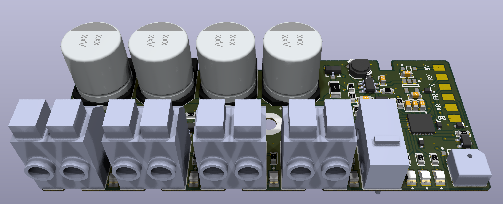
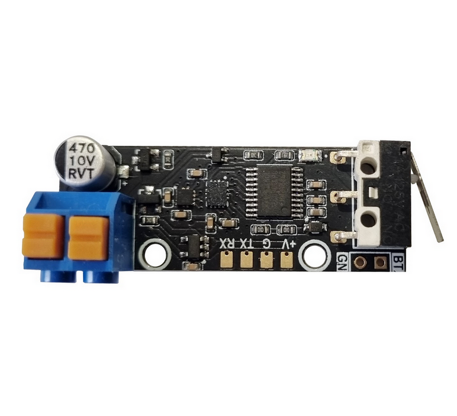
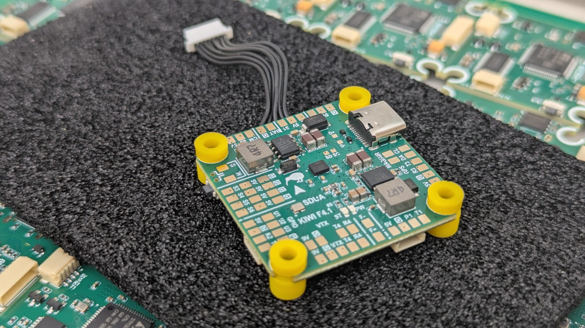
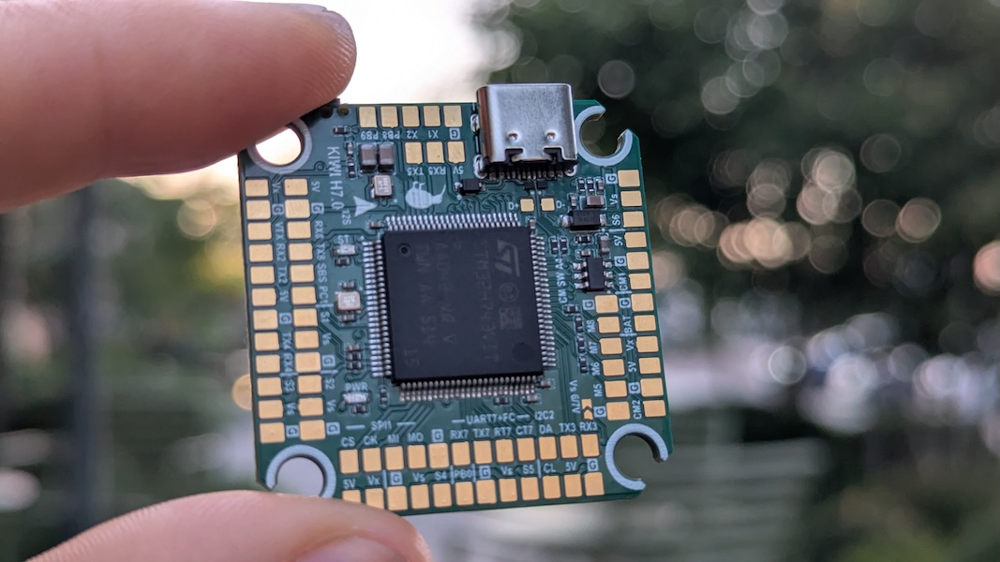

KIWI Flight Systems Manual
Welcome to the official documentation for KIWI Systems. Engineered with precision. Inspired by a bird that never gave up.
Inside, you’ll find hardware specifications, pinouts, setup procedures, firmware integration guides, and system-level configuration references.
Whether you’re building from scratch, integrating custom sensors, or tuning for flight performance, this documentation is designed to support your development process from start to finish.
For feedback, corrections, or suggestions, please contact us at support@kaponga.nz
Welcome
UAV Electronics
Sensors
Flight Controllers
Flight Controllers (Obsolete)
Downloads
Kiwi Ground Station Kit

Призначення
Комплект наземної станції керування FPV дроном призначений для забезпечення безпеки операторів дронів.
Комплект є основою для побудови інфраструктури наземної станції.
Склад
Комплект складається з двох основних плат:
- Ground Board (плата оператора) — 1 шт
- Antenna Board (плата щогли) — 1 шт
- JR Board (адаптер для підключення до пульта RC)
- Технічна документація — 1 шт
- Кабель Cat5e або Cat6 не входить до комплекту
Плата оператора розміщується у бліндажі або в пункті керування дронами.
Плата щогли встановлюється поблизу антени.
З’єднання між ними здійснюється екранованим кабелем “вита пара” довжиною до 300 м.
Функції
- Перетворення керуючого сигналу S.Port → UART і назад.
- Передача аналогового відео CVBS з VRX до бліндажу.
- Підсилення відеосигналу та його перетворення в цифровий потік.
- Живлення передавального модуля та VRX до 26В.
Переваги Kiwi Ground Station Kit
- Надійна передача до 600 м без ретрансляторів.
- Один кабель передає живлення, відео, та керування.
- Можливість живлення щогли локально або по кабелю.
- Вбудовані DC-DC стабілізатори 5V, 9V, 12V на щоглі.
- 4 відеовиходи без затримки.
- Підтримка UART / CRSF.
- Мінімальна кількість з’єднань.
- Робота в діапазоні температур -20°C до +60°C.
Поширені сценарії використання
- Мобільні наземні станції для FPV-дронів
- Розвідувальні комплекси з щоглою до 10 м
- Модернізація старих систем зв’язку
- Системи спостереження у складних умовах
Технічні характеристики
| Параметр | Значення |
|---|---|
| З’єднання між платами | Екранована вита пара (T568B) |
| Максимальна довжина кабелю | до 300 м |
| Живлення по кабелю | до 150 м без підвищення |
| Робоча напруга живлення | 3S–12S (12–50 В) |
| Передача даних | UART / CRSF |
| Передача відео | CVBS (аналог) |
| Відеовиходи | 4 на Ground Board |
| Робоча температура | -20°C … +60°C |
| Стабілізатори на щоглі | 5V, 9V, 12V (DC-DC) |
Схема підключення
Ground Board:
- Video1 → FPV окуляри
- Video2 → Монітор
- Video3 → DVR
- Video4 → USB відео стрім (запис/трансляція)
- UART → Пульт або ПК
Antenna Board:
- TX (наприклад, ELRS TX)
- VRX (аналоговий приймач)
Зʼєднання:
Ground Board ↔ Antenna Board через екранований кабель Cat5e/Cat6 до 300 м
Живлення та втрати напруги
Стабілізація на щоглі
На платі Antenna Board встановлені DC-DC перетворювачі:
- 5V — для VRX
- 9V — для спеціальних пристроїв
- 12V — для передавача
Втрати на довгих кабелях (1А навантаження)
| Довжина | Втрати (6S) | Втрати (12S) | Напруга на щоглі (6S / 12S) |
|---|---|---|---|
| 100 м | ~3.6 В | ~3.6 В | 21.6 В / 46.8 В |
| 200 м | ~7.2 В | ~7.2 В | 18.0 В / 43.2 В |
| 300 м | ~10.8 В | ~10.8 В | 14.4 В / 39.6 В |
Інструкція з експлуатації
- Підключіть окуляри, монітор, DVR та USB відео стрім до Ground Board.
- Підключіть пульт або ПК через UART.
- Підключіть живлення 6S або 12S.
- З’єднайте Ground ↔ Antenna через кабель.
- Підключіть VRX та TX до Antenna Board.
- Увімкніть систему.
Рекомендації щодо прокладання і маскування кабелю
- Прокладати вздовж укриттів (дерева, рельєф, стіни).
- Уникати відкритих ділянок.
- Маскувати або фарбувати кабель.
- Фіксувати до землі або прокладати у кожусі.
- Біля щогли залишати запас.
- Перевіряти видимість з дронів.
Drobodrone: Плата для керування піротехнічними системами

Купити: на kiwidrone
Опис
Drobodrone — це універсальна та безпечна плата для керування піротехнічними навантаженнями (парашути, феєрверки, маркери тощо), призначена для інтеграції у складі FPV, UAV та інших безпілотних систем. Підтримує до 4 незалежних каналів підриву з високим рівнем безпеки.
Плата підтримує багаторазове використання і може бути повністю перепрограмована для кастомних сценаріїв.
Основні функції
-
4 незалежні канали підриву
Призначені для запуску різних піротехнічних систем. Кожен канал має апаратний ключ для запобігання хибному спрацюванню. -
Інтерфейси керування:
- PWM IN x2:
- ARM: активує систему (захист знято)
- FIRE: активує підрив (при активному ARM)
- PWM активується при ширині імпульсу 1800–2000us
- UART (SmartESAD):
- Для передачі телеметрії, контролю статусу та розширеного керування
- PWM IN x2:
-
Аудіо сигналізація:
Вбудований динамік інформує про поточний статус (наприклад: озброєно, відмова, успішне спрацювання). -
Світлова сигналізація:
Три яскраві LED інформують про стан системи: Ready / Armed / Fired / Error -
Механічна чека (запобіжник):
Фізичне роз’єднання для запобігання спрацювання під час транспортування чи підготовки. -
Інтерфейс живлення:
- Живлення від 5V
- Спрацювання елементів від 20V
- Захист від перенапруги, короткого замикання
Безпекові елементи
Система побудована за принципом багаторівневого захисту:
- Механічний вимикач-запобіжник — фізично розриває ланцюг.
- PWM-сигнал типу ARM — не дозволяє спрацювання без команди.
- Таймер самозахисту — автоматичне вимкнення при відсутності FIRE протягом заданого часу.
- Апаратні ключі — унеможливлюють коротке замикання або хибне спрацювання.
- Світлова та звукова індикація — для візуального та звукового контролю статусу.
Сумісність з автопілотами
Плата легко інтегрується з будь-яким автопілотом, який має PWM-виходи або UART-порти:
| Платформа | Метод інтеграції |
|---|---|
| ArduPilot | SERVOx_FUNCTION = 94/95, 51-66 |
| Betaflight | RESOURCE + SERVO конфігурація |
| iNAV | Servo Mixer + Modes |
| INDI/Custom | PWM або UART SmartESAD |
PWM-сигнал може бути поданий з пульта, автопілота або окремого модуля запуску.
Роз’єми та підключення
- Pyro Out x4: спеціальні піротехнічні конектори
- PWM IN x2: пади для пайки
- UART: пади для пайки
- 5V In: пади для живлення
- GND, Status LED, Speaker: окремі виходи
Плати мають великі, зручні контактні майданчики, які легко інтегрувати навіть у щільну проводку.
Кастомізація
Плата підтримує:
- Перепрошивку MCU через стандартний bootloader
- Зміну логіки ARM/FIRE
- Зміну таймерів, режимів індикації
- Підтримку альтернативних протоколів (за потреби)
Інтеграція: Швидкий старт
- Підключіть 5V живлення та землю
- Підключіть PWM ARM та PWM FIRE від автопілота
- Підключіть піротехнічні канали
- Встановіть механічну чеку
- На землі подайте ARM > FIRE у потрібний момент
- Перевірте LED та аудіо сигналізацію
- Опціонально підключіть UART до Companion Computer або логера
Примітка
Перед польотом завжди перевіряйте стан чека, сигналів, підключення піроканалів та акумулятора. Не залишайте плату в режимі ARM без нагляду.
Індикатори станів. Керування
Комбінація помаранчевого 🟠 та зеленого діодів 🟢 – індикатор поточного стану плати.
Червоний діод 🔴 сигналізує про помилку, яку має усунути оператор.
Помилки можливі в будʼякому зі станів плати. Щоб плата могла перейти в наступний стан, спершу треба усунути всі помилки.
- 🔴🔴🔴🔴🔴🔴 (постійно світиться) – плата не отримує валідний PWM ARM чи PWM ARM сигнал, можливо проблема пайки зʼєднання з польотним контроллером.
- 🔴🔴⚪️⚪️🔴🔴 (повільно блимає, 1 раз на секунду, 1гц) – треба відтиснути PWM ARM.
- 🔴⚪️🔴⚪️🔴⚪️ (швидко блимає, 3 рази на секунду, 3гц) – треба відтиснути PWM FIRE.
PWM: 0 ≤ invalid < 900 ≤ valid=0 ≤ 1800 < valid=1 < 2000 ≤ invalid
Для початку роботи:
- плата має “бачити пульт”: отримувати валідні PWM ARM та PWM FIRE (900 < pwm ширина < 2000)
- PWM ARM має бути у положені disarm (0, false, low, відтиснуте, вимкнене, ненатиснуте)
- PWM FIRE має бути у положені nofire (0, false, low, відтиснуте, вимкнене, ненатиснуте)
- вставити запобіжник (чеку)
Стани:
(1) Безпечно. Вітання 🔔:
🔴🔴🔴🔴🔴🔴
🟠🟠🟠🟠🟠🟠
🟢🟢🟢🟢🟢🟢
Триває секунду після подачі живлення, далі автоматично переходить в (2) Очікую Запобіжник
(2) Безпечно. Очікую запобіжник:
⚪️⚪️⚪️⚪️⚪️⚪️
🟢⚪️🟢⚪️🟢⚪️
Чекає поки оператор вставить чеку, далі переходить в (3) Запобіжник
(3) Безпечно. Запобіжник:
⚪️⚪️⚪️⚪️⚪️⚪️
🟢🟢🟢🟢🟢🟢
Чекає поки оператор усуне чеку, далі переходить в (4) Таймер
(4) Безпечно. Таймер:
⚪️⚪️⚪️⚪️⚪️⚪️
🟢🟢⚪️⚪️🟢🟢
Можливо вставити чеку щоб повернутись в (3) Запобіжник
Триває 60 секунд. Дає час відійти після усунення чеки. Далі переходить в (5) Очікую Заряд
(5) Уважно. Очікую Заряд:
🟠🟠⚪️⚪️🟠🟠
Можливо вставити чеку щоб повернутись в (3) Запобіжник
Чекає на PWM ARM від оператора, далі ~секунду заряджає 🔔 і переходить в (6) Заряджено
(6) Небезпечно. Заряджено 🔔:
🟠⚪️🟠⚪️🟠⚪️
Можливо вставити чеку щоб повернутись в (3) Запобіжник
Відтисни PWM ARM щоб розрядити і повернутись в (5) Очікую Заряд
Натисни PWM FIRE щоб зробити (7) Постріл.
(7) Небезпечно. Постріл:
🔴🔴🔴🔴🔴🔴
🟠🟠🟠🟠🟠🟠
🟢🟢🟢🟢🟢🟢
Постріл триває 100ms і автоматично переходить в (5) Очікую Заряд, який одразу переходить в (6) Заряджено якщо не відтискати PWM ARM.
Задля безпеки, для наступного пострілу треба відтиснути PWM FIRE, про що нагадає помилка 🔴⚪️🔴⚪️🔴⚪️.
4 незалежні канали підриву 1234 поділені на 2 групи по 2 канали в кожній 12 34.
Постріл підриває поточну активну группу (2 канали одночасно), і готує наступну групу для наступного пострілу. I так по-колу. Тобто постріли 1 2 3 4 5 6 здетонують канали 12 34 12 34 12 34.
Тобто послідовність роботи така:
підготовка: power arm=0 fire=0 вставили_чеку вийняли_чеку 60сек
робота: arm=1 fire=1 fire=0 fire=1
додому: fire=0 arm=0
Ініціатор для мін універсальний
Призначення
Ініціатор споряджається у протитанкові або протипіхотні міни типу ПOM, ПМН-3, ОЗМ-72, МОН-50, ТМ-62, ПТМ-3, ПТМ-4 тощо.
Основні задачі
- мінування під’їзних шляхів наступу ворожих військ;
- міна-пастка;
- підрив міни при скиді з БПЛА.
Електроніка міни забезпечує безпеку сапера, який встановлює міну вручну, або пілота дрона, який виконує віддалений скид міни, за рахунок двох (у випадку підключення приймача команд – трьох) запобіжників.
Міна проектується з метою унеможливити її знешкодження крім фізичного дистанційного знищення. Вона реагує на найменші рухи чи повороти корпусу, а також наближення феромагнітних предметів (бронежилет, зброя, інструменти тощо) при спробі знищення.
Електроніка може встановлюватись у корпуси стандартних серійних мін, щоб ворожий сапер вважав, що він має справу з відомою міною натискної дії (пастка для сапера).
Встановлення опційного приймача команд дозволяє підірвати міну при наближенні до місця її розташування групи ворожої піхоти чи техніки. При переході у наступ можливість віддаленого керування дозволяє оперативно розмінувати шлях наступу дружніх підрозділів.
Переваги
- кілька датчиків цілі;
- можливість зміни програми відповідно до задач;
- віддалене керування (опція);
- неможливість деактивації без пульта;
- можливість пастки з відкладеним вибухом.
Конструкція
- корпус;
- кришка;
- плата з електронними компонентами (16×44×10 мм);
- механічний запобіжник;
- елемент живлення;
- приймальна антена (опціонально);
- вибухова речовина;
- вражаючі елементи;
- електродетонатор.
Датчики цілі
Спрацювання ініціатора відбувається у випадках:
- натискання (8–20 кг);
- замикання сухого контакту;
- переміщення, поворот або нахил міни;
- удар з будь-якого напрямку;
- спроба розібрати корпус;
- зміна магнітного поля, у тому числі наближення феромагнітних об’єктів та металошукачів;
- сигнал від пульта керування (опціонально);
- самознищення за таймером та при розряді батареї нижче критичного рівня.
Керування з пульта: напряму або через ретранслятор. Можливий вибірковий підрив або підрив групи мін.
Запобіжники
- Механічний – чека.
- Електронний – таймер затримки зведення, програмується від 2 хвилин до кількох годин. Таймер обнуляється при найменших рухах міни. Для переведення у бойовий стан вимагається, щоб міна лежала нерухомо протягом усього часу роботи таймера. Це дозволяє витягнути чеку і встановлювати міну вручну або за допомогою дрона без ризику підриву.
- Електронний – активація з пульта (за наявності приймача).
Живлення
- літієва батарея типу 18650 або 2–3 елементи АА/ААА;
- струм споживання – менше 1 мА;
- час безперервної роботи у режимі очікування: до 30 діб залежно від типу батареї;
- при комплектуванні приймачем команд – до 10 діб;
- можливе самознищення при падінні напруги нижче критичного рівня.
Установка
- вручну;
- скид з БПЛА;
- доставка наземним дроном.
Принцип роботи
Після установки або скиду, акселерометр та магнетометр запам’ятовують поточне положення міни відносно вектора прискорення та магнітного поля Землі.
- Зміна положення фіксується акселерометром,
- поворот – гіроскопом,
- зміна магнітного поля – магнетометром.
Перевищення встановлених порогів призводить до підриву.
Заплановані удосконалення у версії 2.0
- інтегрований приймач команд у складі плати;
- покращений алгоритм енергозбереження;
- нові батареї типу LiCOCl₂ з температурним діапазоном від -60 до +80 °C та строком зберігання до 10 років.
Universal initiator for land mines PyroMine
Purpose
The initiator is designed for anti-tank and anti-personnel mines such as POM, PMN-3, OZM-72, MON-50, TM-62, PTM-3, PTM-4, etc.
Main tasks
- mining the supply lines of enemy troops;
- trap mine;
- detonation of a mine when dropped from a UAV.
The electronics ensure the safety of the sapper who installs the mine manually or the UAV pilot who performs the drop, thanks to two fuses (or three with command receiver).
The initiator is designed to make neutralization impossible except by remote destruction. It reacts to even slight movements, tilts, or the approach of ferromagnetic objects.
It can be mounted into standard mine bodies so that enemy sappers mistake it for a known pressure mine (booby trap).
With an optional command receiver, the mine can be detonated upon the approach of enemy infantry or vehicles. During an offensive, remote control allows quick clearance of friendly paths.
Advantages
- multiple target sensors;
- reprogrammable for specific missions;
- remote control (optional);
- impossible to deactivate without remote unit;
- trap with delayed explosion.
Design
- body;
- cover;
- PCB with electronics (16×44×10 mm);
- mechanical fuse;
- battery;
- receiving antenna (optional);
- explosive charge;
- fragments;
- electric detonator.
Target sensors
The initiator is triggered by:
- pressing (8–20 kg);
- dry contact closing;
- moving, turning or tilting the mine;
- impact from any direction;
- disassembly attempt;
- magnetic field changes (ferromagnetic objects, metal detectors);
- remote signal (optional);
- self-destruction on timer or low battery.
Remote control: direct or via repeater. Selective or grouped detonation.
Fuses
- Mechanical – safety pin.
- Electronic – arming delay timer (2 minutes to several hours). Reset on any movement, requires the mine to stay still to arm.
- Electronic – remote activation (if receiver is installed).
Power
- lithium 18650 or 2–3 AA/AAA cells;
- consumption <1 mA;
- standby operation up to 30 days;
- with command receiver – up to 10 days;
- optional self-destruction at critical voltage.
Deployment
- manual;
- UAV drop;
- ground drone delivery.
Operation principle
After deployment, the accelerometer and magnetometer record initial orientation and field values.
- accelerometer detects movement,
- gyroscope detects rotation,
- magnetometer detects magnetic changes.
Threshold exceedance results in detonation.
Planned improvements in version 2.0
- integrated command receiver on PCB;
- enhanced power-saving algorithms;
- new LiCOCl₂ batteries with -60 to +80 °C operating range and 10-year shelf life.
Flight Controller Board: KIWI F405 12S Configuration

Description
KIWI F4.0 is a versatile flight controller based on the STM32F405, designed for FPV, wings, and autonomous platforms.
The controller combines precision inertial sensing, OSD support, built-in Blackbox, and relay outputs for controlling
external modules.
Support for both Betaflight and ArduPilot allows this board to be used in a wide range of applications.
KIWI F4.0 is a reliable platform for building FPV drones, aircraft, and specialized autonomous systems with full support
for Betaflight and ArduPilot.
Thanks to flexible relay, sensor, and telemetry connectivity, the controller is ready for real-world mission use.
Firmware
- ArduPilot 4.6 KiwiF405-12S.zip
- Betaflight 4.5.3 BF-4.5.3.zip
- Betaflight 2025.12.0 BF-2025.12.0-beta.zip
Pinout and Diagrams

{kind=link}
Features
- Industrial-grade IMU Invensense ICM-42688P with external clock
- Bosch BMP388 barometer for altitude measurement
- Integrated 128Mbit Blackbox flash memory (W25Q128FV)
- MAX7456 OSD chip for overlaying telemetry on analog video
- High-precision voltage and current monitoring via ADC (VBAT, CURRENT)
- GPIO-controlled relay outputs for powering VTX, cameras, or pyrotechnic systems
- 4 motor PWM outputs + 6 servo channels
- USB Type-C with DFU firmware flashing support
- Full CRSF / ELRS telemetry support (RSSI, LQ, SNR, Power)
Technical Specifications
- MCU: STM32F405RG (168 MHz)
- IMU: ICM-42688P with external oscillator
- Barometer: Bosch BMP388
- OSD: MAX7456
- Flash Memory: W25Q128FV (128 Mbit)
- Ports:
- 5x UART (ESAD, RC, GPS, VTX, ESC/MSP)
- 1x I2C
- 3x SPI (OSD, IMU, FLASH)
- ADC: VBAT, CURR
- PWM:
- 4 motor channels
- 6 servo channels
- GPIO Relays:
- U1, U2, U3, F+, F- (controlled via GPIO)
- Interfaces:
- USB Type-C
- SWD for debugging
- Dimensions:
- 36×36 mm
- Mounting: 30.5×30.5 mm
- LED: Heartbeat indicator
KiwiH743 12S Flight Controller

Overview
The KiwiH743 is a high-performance flight controller based on the STM32H743 MCU, designed for advanced UAV applications. It combines powerful processing, flexible connectivity, and rich sensor support, optimized for ArduPilot firmware.
It is the next generation of the KiwiF405 family, offering 2MB flash, 480 MHz CPU clock, extended UART/SPI/I2C buses, and support for dual IMUs, barometer, and OSD integration.
Firmware
- ArduPilot KiwiH743.zip
- Betaflight
Technical Specifications
Processor, Memory, Clock
- MCU: STM32H743VIT6
- Architecture: ARM Cortex-M7
- Max Frequency: 480 MHz
- Flash: 2048 KB (2 MB)
- FPU: Single-precision, hardware accelerated
- Crystal Frequency: 16 MHz external oscillator
- DataFlash: 16 MB
- OSD Type: Integrated (MAX7456-compatible)
Connectivity
USB, UART, SPI Peripherals
- USB OTG1 (Mavlink)
- USB OTG2 HiSpeed (Serial)
- 7 hardware UARTs
- Dedicated functions:
- UART8: RC input (SBUS/DSM)
- Others available for GPS, telemetry, peripherals
- SPI1 bus available for external peripherals
Sensors
- IMU1: ICM-42688P
- IMU2: ICM-45686
- Barometer: BMP388
- External compass support: yes (I²C probing enabled)
RC Input / PWM Outputs
RC Input
- Supported protocols: CRSF, DSM, and others
PWM Outputs
- Total: up to 13 PWM channels
- Motors: 8 channels
- Servos: 4 channels (or 8 channels with 4 motors)
- DSHOT: supported 4 motor outputs (bidirectional)
Relay Outputs
- Camera switch (
PA8) - Relay1 (
PD4) - Relay2 (
PB7)
Power Monitoring
- Battery Voltage sense (12S)
- Battery Current sense (12S)
- Default monitor type: Analog
Debug & Development
- SWD Pins:
PA13: JTMS-SWDIOPA14: JTCK-SWCLK
LEDs & Indicators
- Status LED:
PE4(active-low)
Advanced Features
- Visual odometry integration: enabled
- External AHRS support
- GPS moving baseline enabled
- Gyro FFT enabled (vibration analysis)
- INS temperature calibration enabled
- Guided (NoGPS) supported
Default Frame & Modes
- Default frame: Quadcopter X (FRAME_TYPE=12, Betaflight-X motor order)
- Flight modes enabled by default:
- Guided (NoGPS)
- FlowHold
- OpticalFlow
Pinouts and schematics
ESC Pins
1 - ESC Telemetry
2 - ESC Current
3 - Motor4
4 - Motor3
5 - Motor2
6 - Motor1
7 - VBAT
8 - GND
Flight Controller Board: KIWI F405 6S Configuration
Description
The KIWI F4.0 is a versatile STM32F405-based flight controller designed for FPV, fixed-wing aircraft, and autonomous platforms. It integrates precise inertial sensing, OSD support, built-in Blackbox logging, and relay outputs for controlling external modules. With support for both Betaflight and ArduPilot, the board can be deployed across a wide range of use cases.
KIWI F4.0 is a reliable platform for building FPV drones, aircraft, and specialized autonomous systems. Its flexible support for relays, sensors, and telemetry makes it ready for real-world mission environments.
Features
- Industrial-grade Invensense ICM-42688P IMU with external clock
- Bosch BMP388 barometer for altitude measurement
- Built-in 128Mbit Blackbox flash memory (W25Q128FV)
- MAX7456 OSD chip for overlaying telemetry on analog video
- High-precision voltage and current monitoring via ADC
- GPIO-controlled relay outputs for powering VTX, cameras, or pyrotechnic systems
- 4 PWM outputs for motors and 6 channels for servos
- USB Type-C with DFU support for firmware updates
- Full CRSF / ELRS support with telemetry (RSSI, LQ, SNR, Power)
Technical Specifications
- MCU: STM32F405RG (168 MHz)
- IMU: ICM-42688P with external clock
- Barometer: Bosch BMP388
- OSD: MAX7456
- Flash: W25Q128FV (128 Mbit)
- Ports:
- 5× UART (ESAD, RC, GPS, VTX, ESC/MSP)
- 1× I2C
- 3× SPI (OSD, IMU, FLASH)
- ADC: VBAT, CURRENT
- PWM:
- 4 motor channels
- 6 servo channels
- GPIO relays:
- 4 relay outputs: X1, X2, X3, X4 (controlled via GPIO)
- Interfaces:
- USB Type-C
- SWD debug interface
- Dimensions:
- 36×36 mm
- Mounting: 30.5×30.5 mm
- Status LED indicator
FPV Польотний контролер KIWI F722
Опис
KIWI F722 — це високопродуктивний контролер польоту для FPV та автономних дронів, розроблений для максимального рівня точності, стабільності та надійності. Підтримка популярних прошивок Betaflight та iNAV дозволяє легко адаптувати контролер до різних сценаріїв використання.
KIWI F722 — це рішення для тих, хто шукає виняткову стабільність, розширені можливості підключення та готовність до будь-яких викликів у FPV та автономних польотах.
Особливості
- Наднизькошумний IMU TDK ICM-42688 з зовнішнім тактовим генератором
- Присвячена фільтрація живлення для IMU для ще кращої точності
- Вбудований барометр Bosch BMP388
- Чіп OSD для накладання даних на відео (AT7456E)
- Вбудована флеш-пам’ять чорного ящика 64Мбіт (W25Q128JVPQ)
- Підтримка роботи із зовнішніми сенсорами через UART та I2C
- GPIO керовані релейні виходи для живлення VTX, Raspberry Pi чи іншого обладнання
- Перемикання двох камер на борту
- Підтримка підключення двох VTX з можливістю перемикання живлення
- Пряма підтримка Betaflight ESC (Plug & Play)
Технічні характеристики
- MCU: STM32F722RET6 (216 МГц)
- IMU: ICM-42688 з зовнішнім годинником
- Барометр: Bosch BMP388
- OSD: AT7456E
- Флеш пам’ять: W25Q128JVPQ (64Мбіт)
- Порти:
- 4x UART
- 1x I2C
- 2x PWM виходи для сервоприводів
- ADC: моніторинг VBAT та струму CURR
- Живлення:
- Вхід живлення: 6S акумулятор
- Вбудовані DC-DC конвертори: 5V 3A та 9V 3A
- Світлодіодні індикатори: Power LED, MCU Status LED (PWM керовані)
- Роз’єми: JST-SH 1.0мм
- Кріплення: 30.5×30.5 мм (стандартне для FPV)
- Габарити: 39×39 мм
Застосування
- FPV-квадрокоптери та літальні апарати
- Автономні безпілотники для розвідки, доставки, моніторингу
- Робототехнічні платформи з вимогами до точного управління
Downloads for KIWI Flight Autoplitot Computers
Betaflight Downloads
Firmware
betaflight_4.5.3_STM32F7X2_KAPONGA_KIWIF70.hex
betaflight_4.5.3_STM32F7X2_KAPONGA_KIWIF71.hex
betaflight_4.5.3_STM32F405_KAPONGA_KIWIF4.hex
betaflight_4.5.3_STM32F405_KAPONGA_KIWIF4_12S.hex
Presets
BF460-7INCH_KAPONGA_KIWIF71.txt